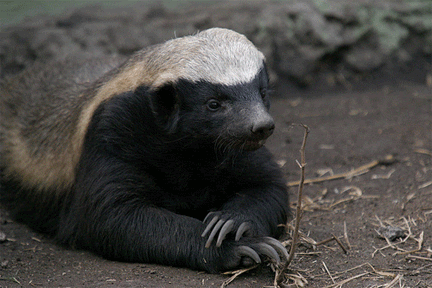

Welcome to the Honey Badger fan website!
You must love honey badgers a lot (because somehow you found this wacky website).
Please enjoy all of the content on our website and feel free to drop us a line with suggestions/comments on how we can better server you and your strange honey badger obsession.
The Honey badger or ratel is a tenacious small carnivore that has a reputation for being, pound for pound, Africa's most fearless animal despite its small size. It is even listed as the "most fearless animal in the world" in the Guinness Book of Records.
